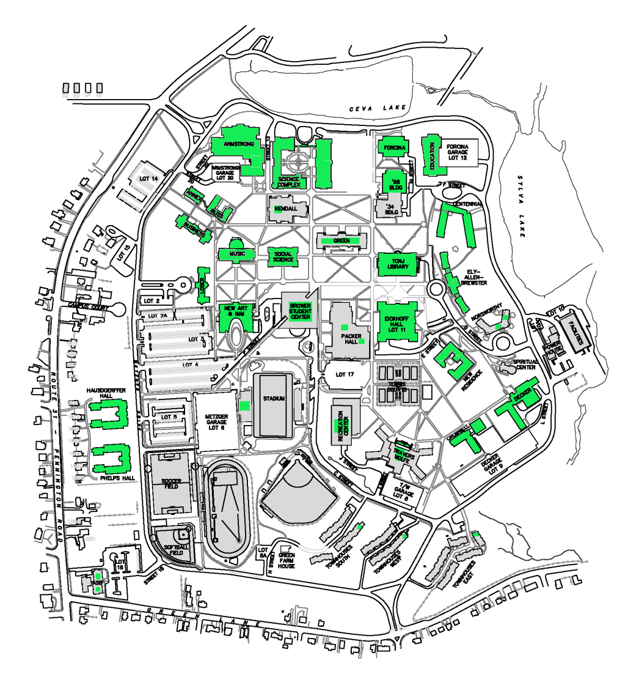

The goal of Team Putting WiFi on the Map is to provide students on The College of New Jersey campus with a fully featured cell phone application that provides information regarding the schools WiFi signal availability. Currently, TCNJ students have no way to visualize the current availability of TCNJ's WiFi network. We plan on using two methods to collect and record data pertaining to the location and strength of WiFi signals across campus. The first method uses a custom designed hardware device, which will serve as the main source of data collection. The second method will be comprised of Android and iPhone applications, which will allow users to report WiFi status. Data collected from user devices will be uploaded to a database and software will calibrate different devices' data to provide a common data format. The data will be processed to produce a "heat map" representing the WiFi signal quality on the TCNJ campus. A legend will be provided that expresses the relationship between the heat map colors and the received signal power at the device's front-end amplifier. As of now, the Raspberry Pi is able to detect WiFi and GPS data via Python commands. The Raspberry Pi is also able to communicate data to the PSoC1 to be displayed. On the other end of the project, the Android application is fully functional while the iOS application is in its early stage of development.